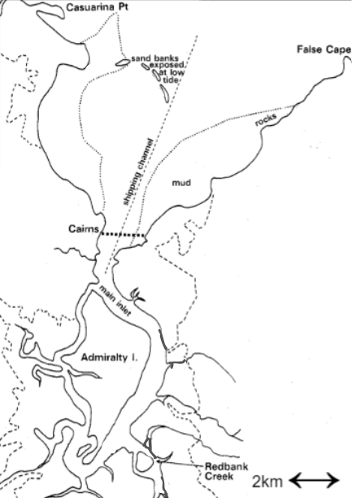
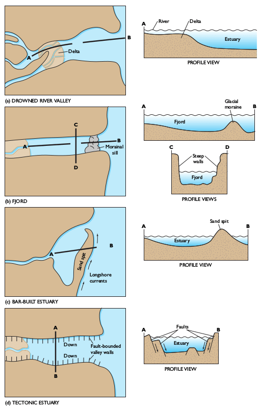
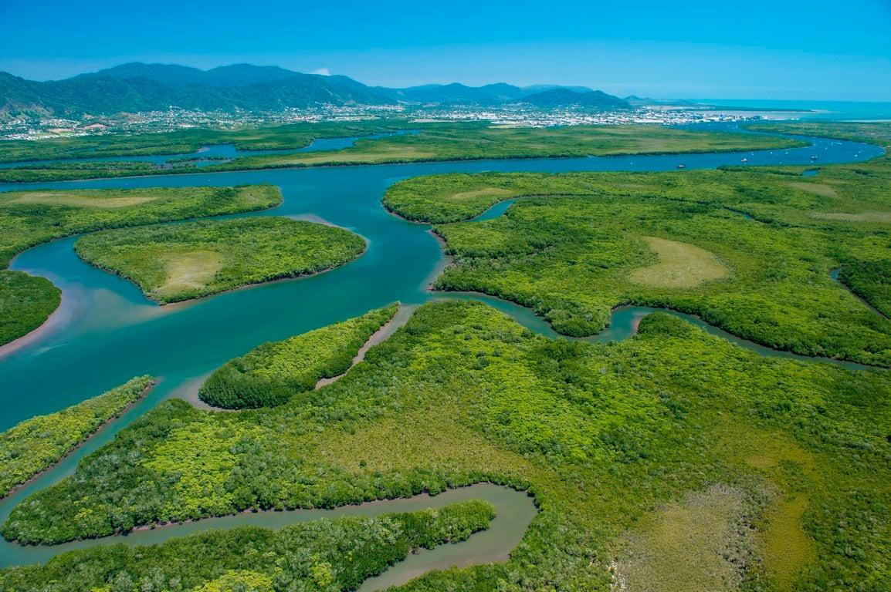

figure 1 : map of trinity inlet system◾◾◾marks the boundary between the estuary and bay ---- marks limit of mangroves 2km
 Where is Trinity Inlet?
The trinity inlet is among one of the more than 1,500 estuaries in Australia. The trinity inlet goes by many names inlcuding carins estuary, chinamans creek and carins harbour. It is located right in the city of Carins, Queensland(16°55'S.,145 "47'E.). The estuary is quite shallow about 10m - 13m deep. Starting from a wide but shallow bay, Trinity streches about 10km inland to form the Mulgrave river. Its water are a sanctuary for marine life, having its creeks fringed by mangroves and mudbanks. Within the water are extensive mudflats, seagrass beds, sand bars with small rocky areas exposed at low tide.
What type of estuary?
In Australia and across the globe there are 4 ways estuarys are formed. All of these types can be esily identify by their charcteristics. The first is a sandbar estuary which can be idetifyed as having a distinct sand bar forming a lagoon. The second is a Fjord, these estuaries are formed within U-shaped valleys that once held glaciers however Australia was never effected by the ice age so we know Trinity is not a Fjord. Thirdly, a tectonic estuary which is formed by convergent tectonic activity, and we know that the east coast of Queensland recives very minimal tectonic activy as it is not on the ring of fire. This leaves the Trinity to fit the fourth type of estuary a drowned river valley.
Most drowed river vallies were created from the melting of the last ice age, where the sealevels rose immensely, aprox 120m meaning that along many coasts the seawater inundated nearby low-lying land like valleys. We can identiy the trinity as a drowed river valley becuase of its apperance. We can see that the Trinity is because of the way the water flows through, as it is consistently splitting off into smaller river & creeks. These creeks represent evidence of how the ocean water has flooded the valleys between the mountains. Another reason is its larrge delta.Where the Trinity inlet lies now used to be known as the valley of the Mulgrave when sea levels were much lower.